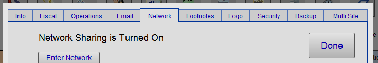
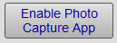
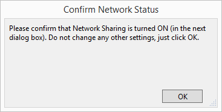
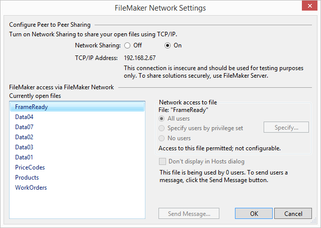
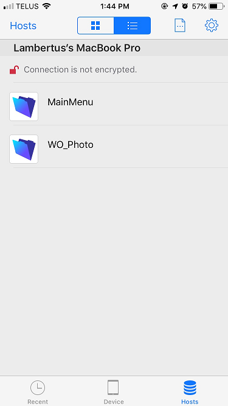
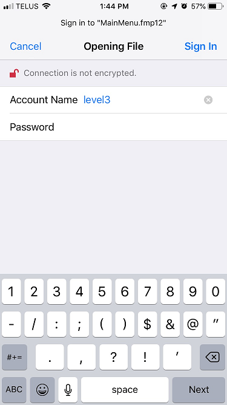
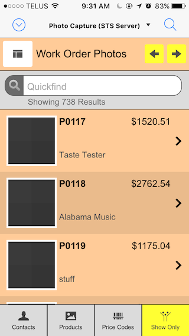
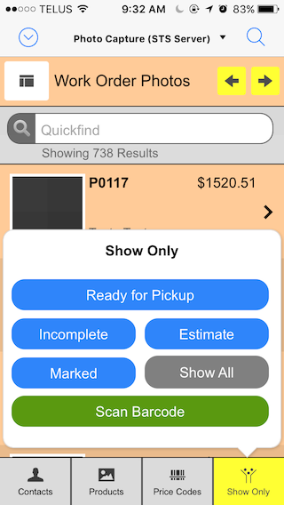
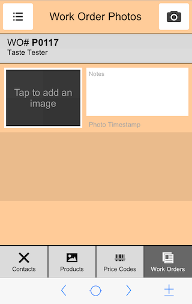
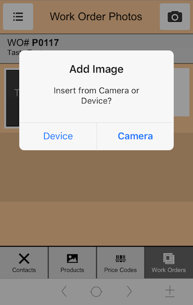

iPhone and iPad Photo Capture App
Photo Capture App
Having a digital image of a moulding profile or a piece of consignment art can be invaluable as a reference. Use the included Photo Capture app to easily add photos into FrameReady.
-
Photos can be added to Contacts, Products, Price Codes and Work Orders.
-
Use the iPhone or iPad's camera or select from the photo/media library.
-
Also use the iPhone or iPad's camera to scan barcodes.
Overview and Notes
-
For single users: the Photo Capture app currently does not require or use a network license from Adatasol Inc.
-
For FileMaker Server users: the Photo Capture app requires that you use one of your licensed network connections from Adatasol Inc.
-
Requires the FileMaker Go 19 app (free) be installed on your iOS device, e.g. iPad or iPhone.
Enable the Photo Capture App
This is a one-time step.
-
Open FrameReady in level4.
-
On the Main Menu, click the Set Up Data button.

-
Open the Network tab.

-
Click the Enable Photo Capture App button.

-
A dialog appears asking you to please confirm that Network Sharing is turned ON (in the next dialog box).
Do not change settings, just click OK.

-
Click OK.
-
The FileMaker Network Settings dialog appears.

-
Click OK a to return to the Main Menu.
Install FileMaker Go on iPhone or iPad
This is a one-time step.
|
|
See: Install FileMaker Go |
Opening Photo Capture
Use this FileMaker Go app to quickly take photos and synchronize them with FrameReady.
Note: the screenshots below may not reflect the current version of FileMaker Go.
-
Open the FileMaker Go app on your iOS device.
-
Tap the Hosts icon (lower right).

-
Your shared files appear.
If no files appear, then see: Troubleshoot FileMaker Go -
Scroll down and tap to open Photo Capture.
-
Log in using any level.

Using Photo Capture
-
Use the icons at the bottom of the screen to switch between these FrameReady files: Contacts,Products, Price Codes and Work Orders.
-
When in a file, in list view, tap the icon a second time to open a popover window where you can choose how to filter to the list.
-
Swipe up and down to locate records, or
Use the Quickfind (searches all fields) field, or
Use the yellow First and Last arrow buttons. -
Use the 'hamburger' icon to switch to list view; use the 'layout' icon to switch to form view.
-
Tap a record to enter edit mode, then tap the camera icon or the blank image to activate the camera or add media from your device's photo library.
The first time you do this, you are asked to allow FileMaker Go access.
Contact Photos
-
In list view, items display a thumbnail photo, contact ID number, company name, contact name.
-
In form view, an item displays a contact ID number, company, contact name, and thumbnail.
-
Use Quickfind to locate any contact record (searches all fields).
-
To adjust the size of the list, tap Show Only and then tap Marked or Show All.
Product Photos
-
In list view, items display a thumbnail photo, item number, description, artist and price.
-
In form view, item displays item number, description, price, artist, thumbnail and UPC.
-
Use Quickfind to locate any Product record (searches all fields).
-
To adjust the size of the list, tap Show Only and then tap Marked or Show All.
-
To locate a product by barcode, tap Show Only and then tap Scan Barcode.
-
To add a barcode to a product, do a Quickfind to locate the item. Tap to go into form view and then tap the Scanbutton. Use the phone or tablet's camera to auto-snap the barcode. The number is automatically added to the record in FrameReady.
Price Code Photos
-
In list view, items display a thumbnail photo, item number, description, artist and retail price.
-
In form view, an item displays the item number, description, group, category, thumbnail and UPC.
-
Use Quickfind to locate any Price Code record (searches all fields).
-
To filter the list by group, tap Show Only and then choose Moulding, or Matboard, etc.
-
To adjust the size of the list, tap Show Only and then tap Marked or Show All.
-
To locate an item by barcode, tap Show Only and then tap Scan Barcode.
-
To add a barcode to a Price Code record, first do a Quickfind to locate the item. Tap to go into form view and then tap the Scan button. Use the phone or tablet's camera to auto-snap the barcode. The number is automatically added to the record in FrameReady.
Work Order Photos
-
In list view, items display a thumbnail photo, Work Order number, company/customer, description, and the Work Order total.
-
In form view, an item displays the Work Order number, a thumbnail photo, notes and a date/time stamp.
-
Use Quickfind to locate any Work Order (searches all fields).
-
To view items ready for pickup, tap Show Only and then tap Ready for Pickup. (Requires that you use the Location field in the Work Order.)
-
To view incomplete Work Orders, tap Show Only and then tap Incomplete.
-
To view estimates, tap Show Only and then tap Estimate.
-
To adjust the size of the list, tap Show Only and then tap Marked or Show All.
-
To locate a Work Order by barcode, tap Show Only and then tap Scan Barcode.
FileMaker Go "Hidden" Menu
-
To see the FileMaker Go menu/status bar, swipe down with three fingers.
-
To hide the FileMaker Go menu/status bar, swipe up with three fingers.
Locating Photos in FrameReady
-
Work Order photos can be found in Picture tab.
-
Price Code photos can be found in Image tab.
-
Contact photos can be found in Artists tab.
-
Product photos can be found in Image tab.
Photo Capture Screenshots
Work Order Photos List View:

"Show Only" Popover:

Form View:

Add a Photo:

© 2023 Adatasol, Inc.